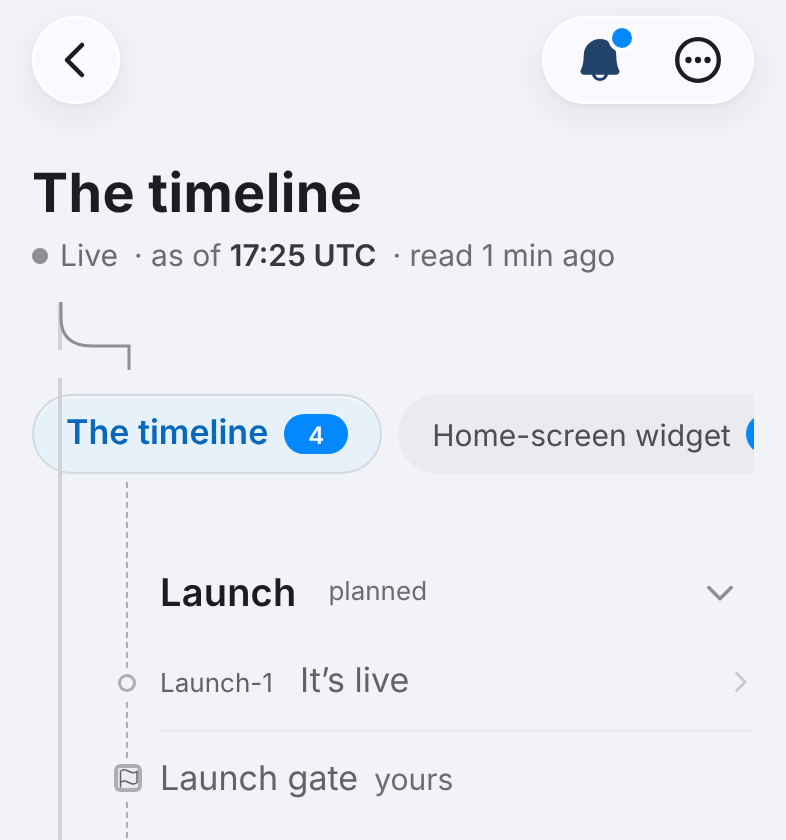
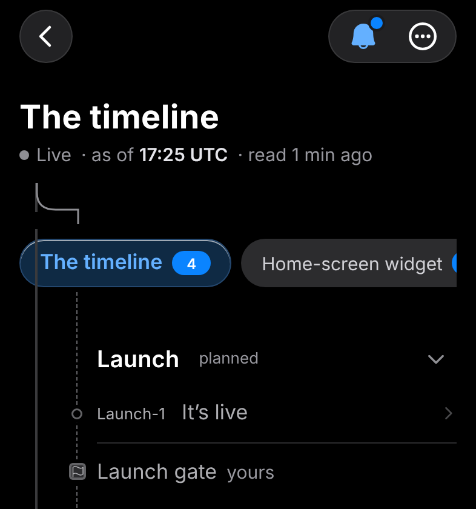
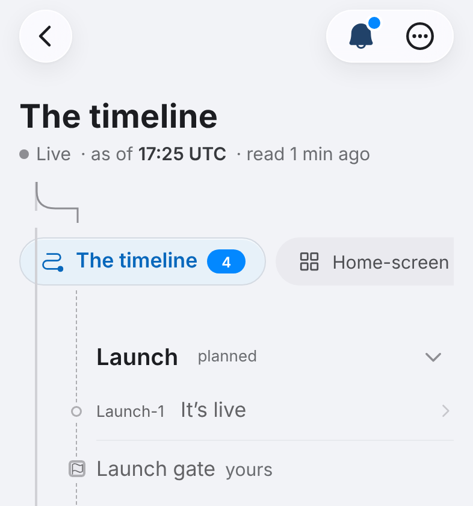
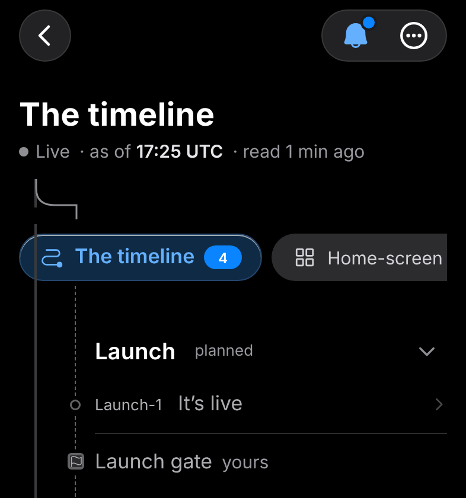
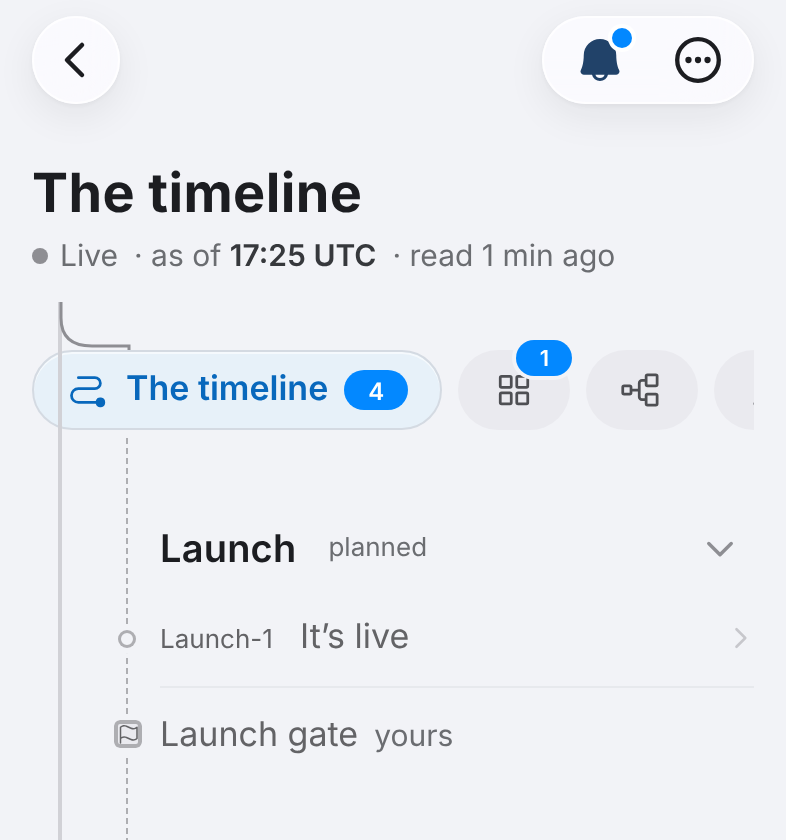
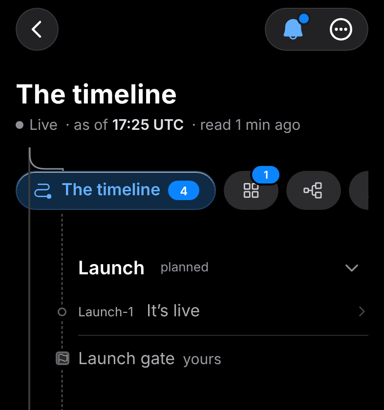

<title>Project Chip Options</title>
<meta name="claude:viewport-fit-sides" content="cover">
<style>
/* Layout: one column of phone-size screenshots, the element as it is first, then each option; light beside dark. Tokens follow the Desk Element Library. */
:root {
  --ground: #f2f3f7; --surface: #ffffff; --text-1: #17181c; --text-2: #6b6d71;
  --separator: #e7e9ed; --accent: #0a6fc0; --tint: #dbe9f7;
  --sans: -apple-system, BlinkMacSystemFont, "SF Pro Text", "Inter", "Segoe UI", Roboto, sans-serif;
}
@media (prefers-color-scheme: dark) { :root:not([data-theme="light"]) {
  --ground: #000000; --surface: #1c1c1e; --text-1: #f2f2f7; --text-2: #a1a1a6;
  --separator: #38383a; --accent: #5aa7ff; --tint: #14324d; color-scheme: dark } }
:root[data-theme="dark"] {
  --ground: #000000; --surface: #1c1c1e; --text-1: #f2f2f7; --text-2: #a1a1a6;
  --separator: #38383a; --accent: #5aa7ff; --tint: #14324d; color-scheme: dark }
body { background: var(--ground); color: var(--text-1); font: 400 17px/1.4 var(--sans);
  padding-left: max(16px, env(safe-area-inset-left, 0px)); padding-right: max(16px, env(safe-area-inset-right, 0px)); padding-block: 24px 48px; }
main { max-width: 860px; margin: 0 auto; display: flex; flex-direction: column; gap: 32px; }
h1 { font: 700 27px/1.15 var(--sans); margin: 0; text-wrap: balance; }
h2 { font: 600 19px/1.25 var(--sans); margin: 0; text-wrap: balance; }
p { margin: 0; max-width: 65ch; }
.lede { color: var(--text-2); font-size: 15px; }
section { display: flex; flex-direction: column; gap: 12px; padding-top: 24px; border-top: 1px solid var(--separator); }
.tag { font: 600 13px/1 var(--sans); letter-spacing: .06em; text-transform: uppercase; color: var(--text-2); }
.tag.rec { color: var(--accent); }
.pair { display: grid; grid-template-columns: repeat(2, minmax(0, 1fr)); gap: 12px; }
figure { margin: 0; display: flex; flex-direction: column; gap: 6px; min-width: 0; }
figure img { width: 100%; max-width: 393px; border-radius: 18px; border: 1px solid var(--separator); display: block; }
figcaption { font-size: 13px; color: var(--text-2); }
ul { margin: 0; padding-left: 20px; font-size: 15px; color: var(--text-2); }
li { margin: 2px 0; }
@media (max-width: 560px) { .pair { grid-template-columns: 1fr; } }
</style>
<main>
  <header style="display:flex;flex-direction:column;gap:8px">
    <h1>Project chips: now, and three options</h1>
    <p class="lede">The project screen of mockup v9, cut at the chip row that switches projects. Each picture is the real v9 page with only the chips changed. Light on the left, dark on the right.</p>
  </header>

  <section>
    <span class="tag">The element now (v9)</span>
    <h2>Named chips</h2>
    <p>Every chip shows its project's name. The selected one is tinted blue and shows how many things need you. The row scrolls sideways, so most projects sit off screen.</p>
    <div class="pair">
      <figure><figcaption>Light</figcaption></figure>
      <figure><figcaption>Dark</figcaption></figure>
    </div>
  </section>

  <section>
    <span class="tag rec">Option A · recommended</span>
    <h2>Keep named chips</h2>
    <p>No change: the pictures above are this option. Nothing new to learn, and no icons to invent, but only two projects fit on screen.</p>
  </section>

  <section>
    <span class="tag">Option B</span>
    <h2>Icon and name on every chip</h2>
    <p>Each project gets an icon beside its name. Easier to spot, but the chips get wider, so even fewer fit on screen.</p>
    <div class="pair">
      <figure><figcaption>Light</figcaption></figure>
      <figure><figcaption>Dark</figcaption></figure>
    </div>
  </section>

  <section>
    <span class="tag">Option C</span>
    <h2>Icon only, name when selected</h2>
    <p>Craft's way. Unselected projects show only their icon, with their count as a small badge; the selected one shows icon and name. Every project fits on one row, but you have to learn the icons.</p>
    <div class="pair">
      <figure><figcaption>Light</figcaption></figure>
      <figure><figcaption>Dark</figcaption></figure>
    </div>
  </section>

  <section>
    <span class="tag">Icons proposed for B and C</span>
    <ul>
      <li>The timeline: a path</li>
      <li>Home-screen widget: four squares</li>
      <li>Operating model: a tree diagram</li>
      <li>Model-Lab: a flask</li>
      <li>Portfolio: a briefcase</li>
    </ul>
    <p class="lede">Icons are Phosphor, the library's icon set. Any of them can be swapped.</p>
  </section>
</main>
